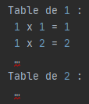
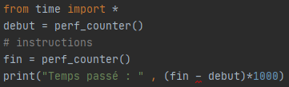
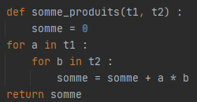
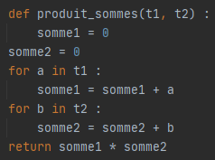

Soit le programme suivant :

Quel est le résultat attendu après l'exécution de ce programme ?
Vérifiez votre réponse en testant le programme
Ecrire une fonction element_commun qui prend en argument deux tableaux t1 et t2 et qui renvoie True si t1 et t2 ont un élément commun et False sinon.
Ecrire une fonction doublon qui prend en argument un tableau t et qui renvoie True si un élément est présent plus d’une fois dans t.
Ecrire un programme qui affiche des tables de multiplication sous la forme :
Ecrire un programme qui demande deux entiers h et l à l’utilisateur et affiche des symboles # disposés en rectangle de hauteur h et de largeur l.
Ecrire des programmes qui demandent un entier n à l’utilisateur et affichent chacun l’une des figures suivantes (dans un carré de côté n) :

a) En utilisant trois boucles imbriquées, afficher tous les triplets d’entiers 1≤a≤b≤c≤100 tels que a^2+b^2=c^2 (dits triplets pythagoriciens).
b) Modifier le programme pour qu’il renvoie le nombre de triplets.
Pour calculer les nombres premiers plus petits qu’une certaine limite N qu’on se fixe, il existe un algorithme appelé crible d’Eratosthène.
On se donne un tableau t de N booléens, initialement tous égaux à True, sauf t[0] et t[1] qui valent False.
Puis on parcourt ce tableau dans le sens des indices croissants.
Pour chaque indice i, il y a deux cas de figure :
• Si t[i] vaut False, alors le nombre i n’est pas premier et il n’y a rien à faire.
• Si t[i] vaut True, alors le nombre i est premier et on met à False toutes les cases du tableau dont l’indice est un multiple de i, c’est-à-dire 2 * i, 3 * i, …
Ecrire un programme qui réalise cet algorithme et affiche tous les nombres premiers plus petits que 100. On doit en trouver 25.
a) Pour chacun des programmes précédents, donner le nombre de lignes affichées.
b) Par combien ce nombre de lignes est multiplié lorsqu’on multiplie n par 10 ?
A retenir :
En informatique, la question de la performance des programmes est centrale.
D’une manière générale, le traitement d’un volume de données requiert un temps d’exécution lié à ce volume de données.
On s’attache rarement à la détermination exacte de ce temps, une estimation suffit pour se convaincre de l’efficacité du programme.
Par exemple, si en doublant un volume n de données, un programme renvoie une réponse avec un temps d’exécution multiplié par deux et un autre programme renvoie une réponse au même problème avec un temps d’exécution multiplié par quatre, on peut raisonnablement penser que le premier programme est plus performant.
On dit que sa complexité temporelle est meilleure.
Il est ainsi possible de cataloguer les programmes qui résolvent un même problème en termes de complexité temporelle, c’est-à-dire une estimation de la performance en fonction du volume de données à traiter.
On peut également s’intéresser à l’espace mémoire occupé au cours de l’exécution d’un programme que l’on appelle complexité spatiale. Plus cette complexité est grande, plus le programme a besoin de zone mémoires pour stocker les données.
Les instructions d’un programme s’exécutent à très grande vitesse, si bien que le résultat donne parfois l’impression d’être obtenu instantanément. On ne fait pas toujours de différences entre un programme qui s’exécute en 0,01 millisecondes et un autre en 10 millisecondes.
Cependant, si le nombre d’instructions exécuté est grand, le temps nécessaire à l’exécution d’un programme pourra devenir conséquent.
Pour connaître avec plus de précision le temps d’exécution d’un programme, on peut utiliser dans le langage Python les instructions suivantes :
Le temps sera donné en millisecondes.
Pour chacun des programmes suivants, mesurer le temps d’exécution du programme suivant avec différentes valeurs de n et tracer la courbe du temps en fonction de n.

Recommencer l’expérience avec d’autres opérations arithmétiques dans le corps de la boucle, puis avec plus de boucles, imbriquées ou non.
Voici deux fonctions qui prennent en paramètre deux tableaux de nombres et qui renvoient un nombre.
Expliquer pourquoi ces deux fonctions, appliquées aux mêmes paramètres, produisent le même résultat.
Quelle est la différence entre les deux ?
 